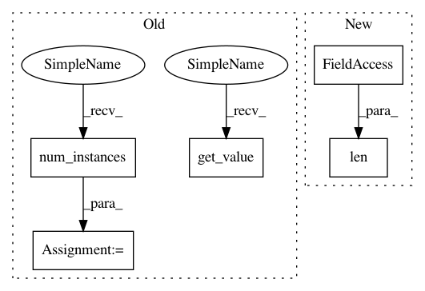

59d32ed0408cb201b3a691064db90c0140a98cce,Orange/widgets/visualize/owtreeviewer.py,OWTreeGraph,toggle_node_color_reg,#OWTreeGraph#,374
Before Change
for node in self.scene.nodes():
node.backgroundBrush = brush
elif self.regression_colors == self.COL_INSTANCE:
max_insts = model.num_instances(model.root)
for node in self.scene.nodes():
node.backgroundBrush = QBrush(def_color.lighter(
120 - 20 * model.num_instances(node.node_id) / max_insts))
elif self.regression_colors == self.COL_MEAN:
minv = np.nanmin(self.dataset.Y)
maxv = np.nanmax(self.dataset.Y)
fact = 1 / (maxv - minv) if minv != maxv else 1
colors = self.scene.colors
for node in self.scene.nodes():
node.backgroundBrush = QBrush(
colors[fact * (model.get_value(node.node_id)[0] - minv)])
else:
nodes = list(self.scene.nodes())
variances = [model.get_value(node.node_id)[1] for node in nodes]
max_var = max(variances)
for node, var in zip(nodes, variances):
node.backgroundBrush = QBrush(def_color.lighter(
After Change
max_insts = len(self.model.instances)
for node in self.scene.nodes():
node.backgroundBrush = QBrush(def_color.lighter(
120 - 20 * len(node.node_inst.subset) / max_insts))
elif self.regression_colors == self.COL_MEAN:
minv = np.nanmin(self.dataset.Y)
maxv = np.nanmax(self.dataset.Y)
In pattern: SUPERPATTERN
Frequency: 3
Non-data size: 5
Instances
Project Name: biolab/orange3
Commit Name: 59d32ed0408cb201b3a691064db90c0140a98cce
Time: 2016-10-14
Author: janez.demsar@fri.uni-lj.si
File Name: Orange/widgets/visualize/owtreeviewer.py
Class Name: OWTreeGraph
Method Name: toggle_node_color_reg
Project Name: biolab/orange3
Commit Name: 59d32ed0408cb201b3a691064db90c0140a98cce
Time: 2016-10-14
Author: janez.demsar@fri.uni-lj.si
File Name: Orange/widgets/visualize/owtreeviewer.py
Class Name: OWTreeGraph
Method Name: update_node_info_reg
Project Name: biolab/orange3
Commit Name: 59d32ed0408cb201b3a691064db90c0140a98cce
Time: 2016-10-14
Author: janez.demsar@fri.uni-lj.si
File Name: Orange/widgets/visualize/owtreeviewer.py
Class Name: OWTreeGraph
Method Name: toggle_node_color_reg
Project Name: biolab/orange3
Commit Name: 59d32ed0408cb201b3a691064db90c0140a98cce
Time: 2016-10-14
Author: janez.demsar@fri.uni-lj.si
File Name: Orange/widgets/visualize/owtreeviewer.py
Class Name: OWTreeGraph
Method Name: update_node_info_cls